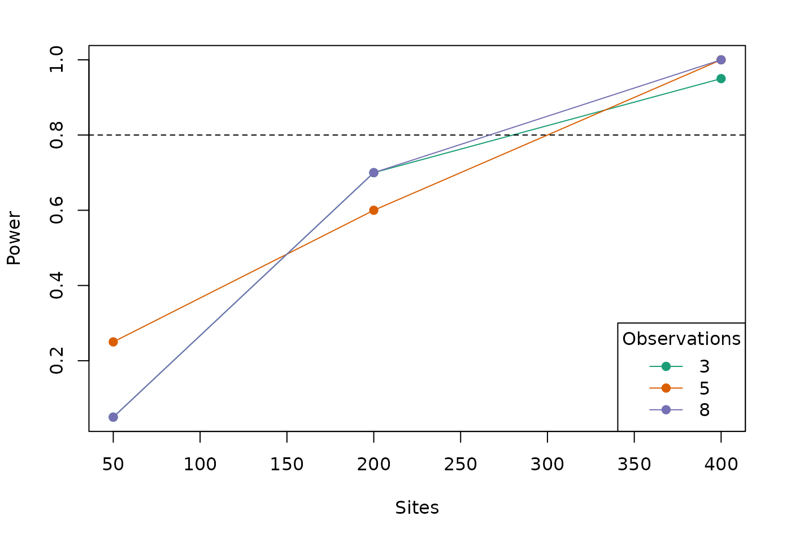

vignettes/powerAnalysis.Rmd
powerAnalysis.RmdFor many analyses in unmarked, a primary goal is to determine if a certain covariate affects the state or detection process. For example, we may want to determine if elevation has an effect on probability of site occupancy, or if wind speed has an effect on detection. We can formulate this idea as set of statistical hypotheses: the null hypothesis (\(H_0\)) and the alternative hypothesis (\(H_a\)):
In order to test these hypotheses, we must collected appropriate data, perhaps by sampling a series of sites at varying elevation for the presence of the species. We can then fit a model in unmarked, specifying in the formula that we are interested in estimating the effect of elevation on occupancy. For example, here is a simple model fit to the crossbill presence-absence dataset included with unmarked:
set.seed(123) library(unmarked) data(crossbill) umf <- unmarkedFrameOccu(y=crossbill[,11:13], siteCovs=data.frame(elev=scale(crossbill$ele))) (mod <- occu(~1~elev, umf))
##
## Call:
## occu(formula = ~1 ~ elev, data = umf)
##
## Occupancy:
## Estimate SE z P(>|z|)
## (Intercept) -1.223 0.168 -7.27 3.61e-13
## elev 0.594 0.166 3.59 3.35e-04
##
## Detection:
## Estimate SE z P(>|z|)
## 0.326 0.186 1.75 0.0798
##
## AIC: 480.8533In the code{unmarked} output, we obtain an estimate (\(\hat{\theta}\)) of the regression coefficient associated with elevation (elev) along with its standard error. Our null hypothesis is that elevation has no effect on occupancy, i.e. \(\theta_0 = 0\). With this information, we can conduct a statistical hypothesis test called a Wald test: \[
\sqrt{W} = \frac{(\hat{\theta} -\theta_0)}{se(\hat{\theta})}
\]
Or simplified: \[ \sqrt{W} = \frac{(0.5939 - 0)}{0.1656} = 3.59 \]
It turns out that the square root of the Wald statistic, \(\sqrt{W}\), follows a standard normal distribution. Thus, we can calculate the probability that our observed statistic, \(\sqrt{W} = 3.59\), occurred by chance assuming that the null hypothesis \(\theta = 0\) is true. In R, for a two-tailed test, this can be calculated as:
## psi(elev)
## 0.0003350055This is the p-value. These values we calculated manually match the results that unmarked gave us in the summary output.
Before conducting our study, we should have defined a threshold p-value (the significance level or \(\alpha\)) below which we reject the null hypothesis. Traditionally, \(\alpha = 0.05\). Our calculated p-value is less than \(\alpha\), so we reject the null hypothesis that elevation has no effect on occupancy.
There are two types of errors that we could be making at this point:
In this vignette, we are most concerned with Type II error. How do we know we have enough data to detect if a covariate has a certain effect? To answer this question we can use power analysis.
Statistical power is defined as 1 - Type II error. So more power means less chance of false negatives, i.e., less chance of failing to reject the null hypothesis when it is false. Statistical power depends on three other pieces of information:
Of the three factors (2) is the one that makes the most sense for researchers to manipulate in order to increase power. However, increasing the sample size requires additional effort and money - so how large does it need to be?
For many statistical models, mathematical formulas have been developed so that power can be calculated for any combination of values for factors 1-3 above. This is not true for most occupancy and abundance models available in unmarked (but see Guillera-Arroita and Lahoz-Monfort (2012) for one example with occupancy models). Thus, unmarked uses a simulation-based approach for estimating power under various combinations of values for effect size, sample size, and significance level.
When conducting power analysis, unmarked needs three pieces of information corresponding to 1-3 above. Of these, (1) the effect size and (3) the significance level are easy to set depending on our hypotheses and desired Type I error. The sample size (2) is trickier: it isn’t enough to just provide the number of sites, since datasets in unmarked also require a variety of other information such as number of surveys per site, number of distance bins, or number of primary periods. Thus, power analysis in unmarked requires a complete dataset in the form of an appropriate unmarkedFrame.
In some cases, we may want to calculate power using an already collected dataset. Importantly, this step must be done running our final analysis. If power analysis is done after the final model is fit, and the effect sizes are defined based on what was observed in that fitted model, we have done what is called a post-hoc power analysis, which is a bad idea (see this post for an example of why this is so bad). In most cases, the real value of power analysis comes before we actually go collect any data, because it helps us decide how much data to collect. But how to get an unmarkedFrame of data before we’ve done our study? Once again the solution is simulation: unmarked provides a set of tools for simulating datasets for any of its supported model types.
To simulate a dataset for a given unmarked model, we need at a minimum four pieces of information:
For example, suppose we want to simulate an occupancy dataset ("occu") in which site occupancy is affected by elevation. The first step is to organize the model structure as a list of formulas, one per submodel. This list must be named in a specific way depending on the model type. To get the required names for a given model, fit an example of that model (the documentation should have one) and call names(model). A single-season occupancy model requires a list with two named components: state and det. We supply a formula for each including an effect of elevation on occupancy (note we could name this whatever we want, here we call it elev).
forms <- list(state=~elev, det=~1)
Next we must tell unmarked what the values for the intercept and regression coefficients in each submodel should be. Once again, this is a named list, one element for each submodel. Within each element we need a named vector with names that match the covariates in our list of formulas above. Note also that each must include a value for the intercept term (this can be named intercept or Intercept). If we are not sure exactly how to structure this list, just skip it for now: unmarked can generate a template for us to fill in later.
Finally, we need to give unmarked information about the study design. This is pretty simple: we just need a list containing values for M, the number of sites, and J the number of surveys per site. For models with multiple primary periods, we’d also need a value of T, the number of primary periods.
design <- list(M=300, J=8) # 300 sites, 8 occasions per site
We’re now ready to simulate a dataset. To do this we use the simulate function, providing as arguments the name of the model "occu" and the three lists we constructed above. Actually, first, let’s not supply the coefs list, to show how unmarked will generate a template for us to use:
simulate("occu", formulas=forms, design=design)
## coefs argument should be a named list of named vectors, with the following structure
## (replacing 0s with your desired coefficient values):
##
## $state
## intercept elev
## 0 0
##
## $det
## intercept
## 0
##
## Error : Supply coefs argument as specified aboveOnce we have our covariates set up properly, add them to the function call:
## Data frame representation of unmarkedFrame object.
## y.1 y.2 y.3 y.4 y.5 y.6 y.7 y.8 elev
## 1 0 0 0 0 0 0 0 0 -0.7152422
## 2 0 0 0 0 0 0 0 0 -0.7526890
## 3 0 0 0 0 1 0 1 0 -0.9385387
## 4 0 0 0 0 0 0 0 0 -1.0525133
## 5 1 0 0 0 0 0 1 0 -0.4371595
## 6 0 1 0 1 1 0 0 0 0.3311792
## 7 1 1 1 0 0 0 0 0 -2.0142105
## 8 0 0 0 0 0 0 0 0 0.2119804
## 9 1 0 0 1 0 1 0 0 1.2366750
## 10 0 0 0 0 0 0 0 0 2.0375740unmarked has generated a presence-absence dataset as well as values for covariate elev.
By default, a covariate will be continuous and come from a standard normal distribution. However, we can control this using the guide argument. For example, suppose we want elevation to have a mean of 2 and a standard deviation of 0.5, and we also want a categorical covariate called landcover. The corresponding formulas and list to supply to guide would look like this:
forms2 <- list(state=~elev+landcover, det=~1) guide <- list(landcover=factor(levels=c("forest","grass")), # landcover is factor elev=list(dist=rnorm, mean=2, sd=0.5)) # custom distribution
We’d also need an updated coefs:
## Data frame representation of unmarkedFrame object.
## y.1 y.2 y.3 y.4 y.5 y.6 y.7 y.8 elev landcover
## 1 0 0 0 0 0 0 0 0 2.063074 forest
## 2 0 0 0 0 0 0 0 0 2.236400 forest
## 3 0 0 0 0 0 0 0 0 1.829623 grass
## 4 0 0 0 0 0 0 0 0 1.879105 forest
## 5 0 0 0 0 0 0 0 0 2.689377 grass
## 6 0 0 0 0 0 0 0 0 1.830558 forest
## 7 0 0 0 0 0 0 0 0 2.010068 forest
## 8 0 0 0 0 0 0 0 0 2.188481 grass
## 9 1 0 1 1 1 0 0 0 1.784138 forest
## 10 0 0 0 0 0 0 0 0 2.979532 grassOur output dataset now includes a new categorical covariate, and the elevation values are adjusted.
More complex models might require more information for simulation, such as the distribution to use for abundance with pcount. This information is simply added as additional arguments to simulate. For example, we can simulate a pcount dataset using the negative binomial ("NB") distribution. The negative binomial has an additional parameter to estimate (alpha) so we must also add an element to coefs.
coefs$alpha <- c(alpha=0.5) head(simulate("pcount", formulas=forms, coefs=coefs, design=design, mixture="NB"))
## Data frame representation of unmarkedFrame object.
## y.1 y.2 y.3 y.4 y.5 y.6 y.7 y.8 elev
## 1 0 0 0 0 0 0 0 0 -1.42329439
## 2 0 0 0 0 0 0 0 0 1.02230366
## 3 0 1 1 0 1 0 0 0 0.68781508
## 4 0 0 0 0 0 0 0 0 -0.30745489
## 5 0 0 1 0 0 1 0 1 -0.01974906
## 6 0 1 1 1 0 0 1 0 0.48839839
## 7 0 0 0 0 0 0 0 0 0.66050081
## 8 0 1 0 1 1 1 0 1 -1.71404333
## 9 0 0 0 0 0 0 0 0 1.45885698
## 10 0 0 0 0 0 0 0 0 -1.40789548Power analyses are conducted with the powerAnalysis function. A powerAnalysis power analysis depends on the input dataset, as well as the covariates of interest and other settings depending on the model (e.g. the distribution used in an N-mixture model or the detection key function in a distance sampling analysis). The easiest way combine all this information and send it to powerAnalysis is to actually fit a model with all the correct settings and our simulated dataset and send that to powerAnalysis. This has the added benefit that it checks to make sure we have all the required information for a valid model. Note that the actual parameter estimates from this model template don’t matter - they aren’t used in the power analysis. Thus, there are two required arguments to powerAnalysis: a fitted model template, and a list of effect sizes.
The first step is to fit a model:
template_model <- occu(~1~elev, occu_umf)
If we run powerAnalysis on template_model with no other arguments, unmarked will again give us a template for the list of effect sizes, which looks exactly like the one for simulation above.
powerAnalysis(template_model)
## coefs argument should be a named list of named vectors, with the following structure
## (replacing 0s with your desired coefficient values):
##
## $state
## intercept elev
## 0 0
##
## $det
## intercept
## 0
##
## Error : Supply coefs argument as specified aboveWe will set our desired effect sizes to match what we used for simulation:
It is also possible to set the significance level alpha; the default is 0.05. We now have all the required information to conduct the power analysis. Remember, unmarked does this by simulation, so you will see a progress bar as unmarked conducts simulations. You can control how many with the nsim argument; we’ll set nsim=20 just to speed things up, but normally you should use more.
(pa <- powerAnalysis(template_model, coefs=effect_sizes, alpha=0.05, nsim=20))
##
## Model:
## occu(formula = ~1 ~ elev, data = occu_umf)
##
## Power Statistics:
## Submodel Parameter Effect Null Power
## state (Intercept) 0.0 0 0.00
## state elev -0.4 0 0.95
## det (Intercept) 0.0 0 0.00The result is an object pa of class unmarkedPower. If you look at pa in the console you will get a summary of power for each parameter in the model. The summary includes the submodel, parameter name, supplied effect size, null hypothesis, and the calculated power based on simulation. By default the null for each parameter is 0, you can change this by supplying a list to the nulls argument with the same structure as coefs.
We have power = 0.95 for the effect of elevation on occupancy probability. This power is calculated by simulating a bunch of datasets based on the template model and supplied effect sizes, fitting a model to each simulated dataset, and then calculating the proportion of these models for which an effect of the covariate would have been detected at the given value of alpha. You can see the raw results from each simulated model with
pa@estimates
One approach to determining how sample size affects power for our model is to simulate a range of unmarkedFrames with varying number of sites, observations, etc. and do a power analysis for each. However powerAnalysis also has a argument design which can help do this automatically.
The design argument will subsample within the original data to generate datasets which are smaller or larger than the original, and conduct power analyses for each scenario. For example, to test power for a dataset with only 50 sites and 3 sample occasions at each:
# 50 sites and 3 obs per site (pa2 <- powerAnalysis(template_model, effect_sizes, design=list(M=50, J=3), nsim=20))
##
## Model:
## occu(formula = ~1 ~ elev, data = occu_umf)
##
## Power Statistics:
## Submodel Parameter Effect Null Power
## state (Intercept) 0.0 0 0.0
## state elev -0.4 0 0.1
## det (Intercept) 0.0 0 0.0With fewer sites and sampling occasions, our power to detect the elevation effect is reduced.
You can also get a larger number of sites via sampling the original sites with replacement:
(pa3 <- powerAnalysis(template_model, effect_sizes, design=list(M=400, J=4), nsim=20))
##
## Model:
## occu(formula = ~1 ~ elev, data = occu_umf)
##
## Power Statistics:
## Submodel Parameter Effect Null Power
## state (Intercept) 0.0 0 0.00
## state elev -0.4 0 0.95
## det (Intercept) 0.0 0 0.00The unmarkedPowerList function creates a unmarkedPowerList object for holding multiple unmarkedPower objects so they can be easily compared. The summary of an unmarkedPowerList is a data.frame with all the outputs shown together, including relevant sample sizes.
unmarkedPowerList(list(pa, pa2, pa3))
## M T J Submodel Parameter Effect Null Power
## 1 300 1 8 state (Intercept) 0.0 0 0.00
## 2 300 1 8 state elev -0.4 0 0.95
## 3 300 1 8 det (Intercept) 0.0 0 0.00
## 4 50 1 3 state (Intercept) 0.0 0 0.00
## 5 50 1 3 state elev -0.4 0 0.10
## 6 50 1 3 det (Intercept) 0.0 0 0.00
## 7 400 1 4 state (Intercept) 0.0 0 0.00
## 8 400 1 4 state elev -0.4 0 0.95
## 9 400 1 4 det (Intercept) 0.0 0 0.00We can also create an unmarkedPowerList by providing a template model and a range of design scenarios in the design argument. A power analysis will be run for each scenario (sampling the original dataset as shown above) and the results combined.
scenarios <- expand.grid(M=c(50,200,400), J=c(3,5,8)) pl <- unmarkedPowerList(template_model, effect_sizes, design=scenarios, nsim=20)
## M = 50, J = 3
## M = 200, J = 3
## M = 400, J = 3
## M = 50, J = 5
## M = 200, J = 5
## M = 400, J = 5
## M = 50, J = 8
## M = 200, J = 8
## M = 400, J = 8## M T J Submodel Parameter Effect Null Power
## 1 50 1 3 state (Intercept) 0.0 0 0.00
## 2 50 1 3 state elev -0.4 0 0.05
## 3 50 1 3 det (Intercept) 0.0 0 0.00
## 4 200 1 3 state (Intercept) 0.0 0 0.00
## 5 200 1 3 state elev -0.4 0 0.70
## 6 200 1 3 det (Intercept) 0.0 0 0.00## M T J Submodel Parameter Effect Null Power
## 22 200 1 8 state (Intercept) 0.0 0 0.0
## 23 200 1 8 state elev -0.4 0 0.7
## 24 200 1 8 det (Intercept) 0.0 0 0.0
## 25 400 1 8 state (Intercept) 0.0 0 0.0
## 26 400 1 8 state elev -0.4 0 1.0
## 27 400 1 8 det (Intercept) 0.0 0 0.0There is a built-in plot method for unmarkedPowerList. You can specify a target power on the plot to the power argument. You also need to specify the parameter of interest ("elev").
plot(pl, power=0.8, param="elev")

Power analysis is an important step in the research process that is often overlooked in studies of animal abundance and occurrence. Getting an estimate of the sample size required to detect a particular effect can help with efficient data collection and set expectations for what covariate relationships might be possible to detect. The power analysis tools in unmarked should help make this part of the research process quick and easy for researchers as the begin to develop study designs.